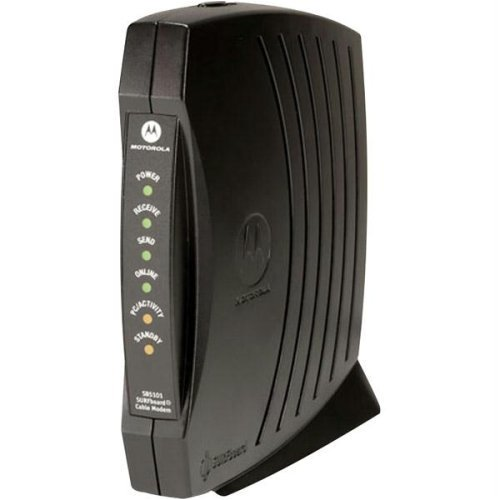
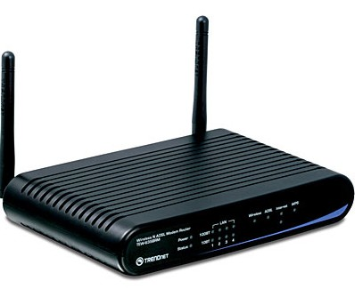

Hardware and Media
Think of all the ways in which home computers are now used: schoolwork, shopping, e-mail, calling family and friends, playing games, watching television shows, downloading music and videos, and so much more. One computer no longer seems to be enough to go around in a household. Once multiple computers are found in a household, a home network often becomes a necessity. A home network allows computers to share access to the internet; use a single printer; send and receive files, pictures, and other documents; and even share access to televisions and game systems.
Different network types use different hardware, but all have the same essential components:
- more than one computer
- hardware (modem and router) and software to coordinate the exchange of information
- a path for the information to follow from one computer to another; this path is the medium, and it can take the form of wires or cables or radio waves
- a firewall—a hardware device or software program that protects the network from malicious users or hackers and makes transactions secure
Communication Hardware
You need a way to allow the computers in the house to “talk” to each other (e.g., share files) and to surf the internet for such services as e-mail; social networking; and search engines needed for news, information, or online research. If you are connecting a computer to the internet, you are joining a vast network of computers. If you are linking all the computers in the household with each other and each with the internet, you are creating a home network that, in turn, links to the vast network of computers that make up the internet. Let’s look at two of the components needed to establish and maintain that connectivity.
Modems
Signals between computers travel over wires such as phone lines, cables such as those provided by your cable company, or, less often, satellite signals. The data that is entered into your computer for processing and the information that results from processing as output are stored in digital format, commonly referred to as zeros and ones. But telephone wires were originally designed to transfer the sound waves represented by the human voice. Wires transfer computer-generated data, too, but via a different format: analog signals. Sound waves are called analog and represent data continuously, like a clock with hands, rather than digitally (with a series of zeros and ones) as computers do. A device is required to convert the digital output from the computer into an analog format for transfer and then to rebuild the original data into digital format at the receiving computer. That device is called a dial-up modem (modulator-demodulator). A digital subscriber line (DSL), CATV cable (the same type of cable that provides cable television), or fiber optic cable will support transmission of the data in digital format, and your modem will most likely be a digital or broadband modem. The last type of modem is a wireless modem. This type of modem uses the cell phone network and connects to the internet wirelessly via cell signal providers.
The following pictures are examples of standalone or external modems. Each would have an RJ11 jack for a DSL connection, or a coaxial jack for cable, and at least one Ethernet jack.
 


A connection for a coaxial cable is not included in the above picture. This is a picture of a typical coaxial cable:

All pictures retrieved from MS Office online pictures and used by Creative Commons license.
Routers

If you are connecting more than one computer to the internet, the other component you will need is a router. In general, a router connects networks that use different communications protocols, such as a home network and the internet. In a typical home network, a router is used to allow multiple computers to access the internet or other computers via a single modem. The router will receive data from the individual computers and send it to the correct destination. Just as important, the router sends the received data from the internet or other sources to the correct computer in the home.
Most modern modems are also routers. Although it is not accurate to say that modems and routers are identical, most likely the small box supplied by your Internet service provider is likely a combination of both modem and router.
Ways a Network Can Be Configured
1. One computer in the system, called the server or host, is physically connected to the router via a cable. The other computers in the home are clients that need to be connected to the host or primary computer (the server). The router must be positioned between the primary computer and the modem.

CC-BY by Janet Zimmer.
2. The client computers may all be connected directly to the router via Ethernet cables:
CC-BY by Janet Zimmer.
3. All the computers may all be connected to a wireless router. Even if a wireless router is used, one computer might be cabled to the router. But none of the other computers need to be cabled to the server. They can all access the router, and thus the modem, without the need for a server machine. This is definitely the case if you are connecting to the internet via a Wi-Fi hot spot. You are accessing other computers or the internet via a wireless router that is in turn connected behind the scenes to a modem, which connects to a wired network.


CC-BY by Janet Zimmer.
Note: There are other means of creating a wired network, but Ethernet is by far the most often used in home networks. Here, then, is a summary of the components required to build a home network.
| Source: (Wilson & Fuller, 2001) | |||||||||||||||
|

References
- Wilson, T. V., & Fuller, J. (2001, April 30). How home networking works. Retrieved August 16, 2016, from http://www.howstuffworks.com/home-network.htm